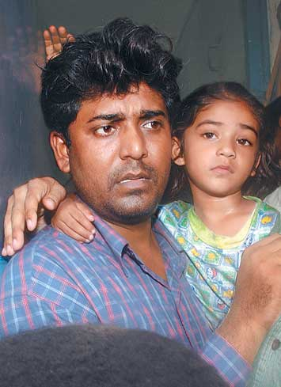

Gujrat
Riot victim takes shelter in West
Bengal
By Ajoy Roy Riot panicked Kutubuddin Ansari of Ahmedabad, Gujrat has found refuge and shelter in Kolkata (Calcutta). West Bengal, more particularly Calcutta once again proved most liberal state and a humanist city. When Islamic fundamentalists led by Jamatis were after the neck of Taslima Nasrin for her courageous anti-fundamentalist writings, we secularists at Dhaka did not dare to give her protection, but Calcutta offered her the necessary asylum at the time of her most critical days. When in 1971, Pakistani barbaric soldiers fell on intellectuals, AL leaders and workers and common mass in general, the state of Wes Bengal opened her border for the fleeing mass from occupied Bangladesh. The people of West Bengal extended rare hospitality to not less than 10 millions Bengalis. Credit must be given to the people of West Bengal.  Remember Kutubuddin of Ahmedabad. During those fateful days of riot in March 2002. a picture was published in all leading dailies India – a young Muslim youth begging for his life to the rioters with folded hands. The picture of him with folded hands, tears streaming down his cheeks made him internationally known as a symbol of terror-stricken face of the Gujrat riots as the news was internationally circulated with the picture. Since then both the riot mongers and the journalists have haunted him. He has been hiding from one place to another in Gujrat. He then fled to neighboring state Maharastra. Even there he was haunted, and he could not find a safe shelter. West Bengal
government, led by Budhadev Basu decided to offer Kutubuddin and his family a
safe shelter in Kolkata. Under the initiative of Mr. Mohammad Selim, a veteran
leader of CPM and minister in charge of the secretariat dealing with
development of minority communities Kutubuddin was brought to Kolkata with his
lovely young wife, a 3 years old lively daughter, and the little son Zishan
yesterday, 9th August. As the Geetanjali Express arrived at the
Howrah railway station, hosts of people received the family wishing them a
happy new life. After about 15 minutes Kutubuddinn clad with a gray coloured
check shirt carrying his daughter on his lap and borkha clad Tahera, wife of
Kutubuddin, with her one-year-old son Zishan on her lap stepped out from the
train. A two room flat has been hired for them at 5/2, Tiljala Road in Park
Circus, a predominantly Muslim locality in Kolkata, and a tailor shop for
Kutubuddin has also been provided to help him stand on his own feet. A West
Bengal government’s Tatea Sumo automobile brought them to their new home
from the station and their new neighbours welcomed the newly arrived guests
cheering, ‘Welcome, Kutubuddin Ansari’ as they stepped in their new
home. The door of the flat was decorated with flowers and written Welcome
Kutubuddin Ansari. Ansaris broke into tears. “I am here with lots of dreams” (Hum yahan bahut sapneke leke aaye hain), said Ansari to the awaiting journalists. In the afternoon they were found more relaxed and a bit secured as he sat at the roof of their four storied building with his wife at his side and daughter on his lap as they faced the over enthusiastic journalists. In an answer to a query he said, “I am confident that whatever happened to me in Gujrat never happen in here.” When asked
why he has moved to West Bengal, the man answered- “Only people of Calcutta
responded to an appeal published in the magazine Communalism Combat
seeking help my relocation and rehabilitation.” Since his arrival to Kolkata
only time he was seen with his well known folded hand posture when he said,
“I have nothing to do with politics.....
I just want to lead a peaceful life here with my family.... And I hope
that what happened to me happens to none.” He further
said, “ The picture you saw of mine repeatedly made my identity known. And I
lost jobs again and again. I want peace now.” He was a tailor at Ahmedabad,
informed Ansari and he wants to do the same job here for his livelihood. About
Gujrat he did not express any hatred or antagonism against his own people. He
remarked with politeness, “Gujrat is good, but a few self interested people
trying to make the state look bad.” The West
Bengal government however tried to apparently maintain an ‘official
distance’ from the rehabilitation programme as is evident from the
utterances of the CPM state secretary Mr. Anil Biswas. He said, “The Bengal
Government is not providing shelter or employment to Kutubudddin Ansari as
stated by the Gujrat government.” He however hastily added, “Some close
friends of Ansari had contacted their friends in Calcutta and sought a shelter
for him. It is true that our party members are also helping Ansari find a
shelter in Calcutta, but the government is in no way involved in the
process.” Mr. Biswas admitted, as reported by daily Telegraph, that Ansari
was feeling insecure in Gujrat and so sought to move to Bengal. “Every
citizen has the right to live and earn his livelihood in any state of the
country and no one should play politics over the issue”, obviously hinting
to the Gujrat state government. All these uncalled for explanations offered by
Anil Biswas were aimed at not to get involved with any controversy with state
government of Gujrat. BJP leader
of the state Mr. Tathagata Roy has alleged that CPM is doing politics with the
matter. There are many Hindu Kutubuddins in Kashmir and Bangladesh. But
the CPM had no headache for them. In reply to this allegation Anil Biswas of
CPM said, “there is no politics with in-coming of Kutubuddin in West Bengal.
The matter is entirely humanitarian issue. We know there are many incidents
like this one. But it is not possible always to do even if we wished.” Hats off to Mohammad Selim and his ministry and the West Bengal People for their liberal generosity. I sincerely hope other states of India follow the example of West Bengal. |
||||